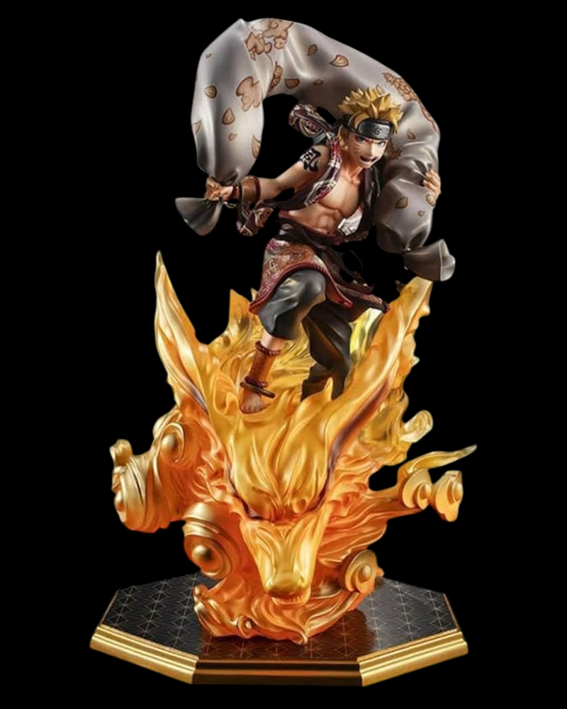
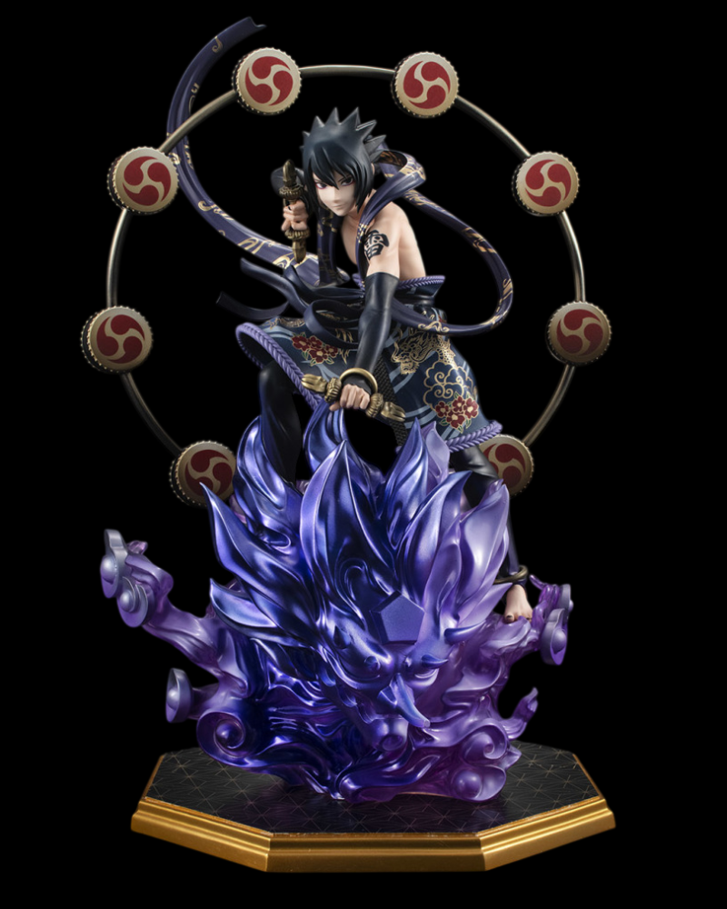
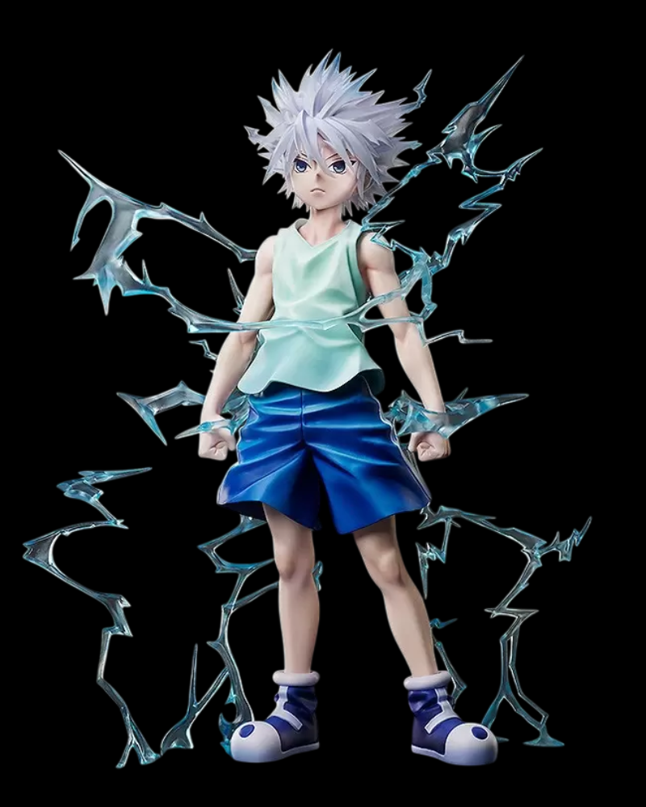
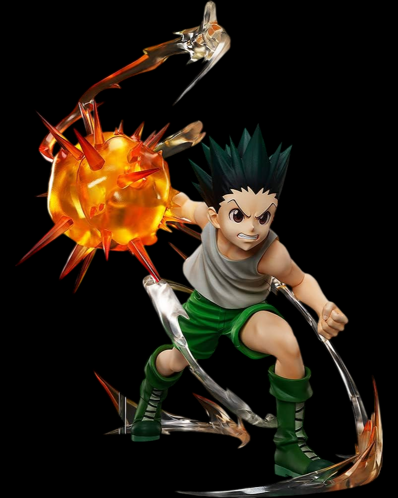
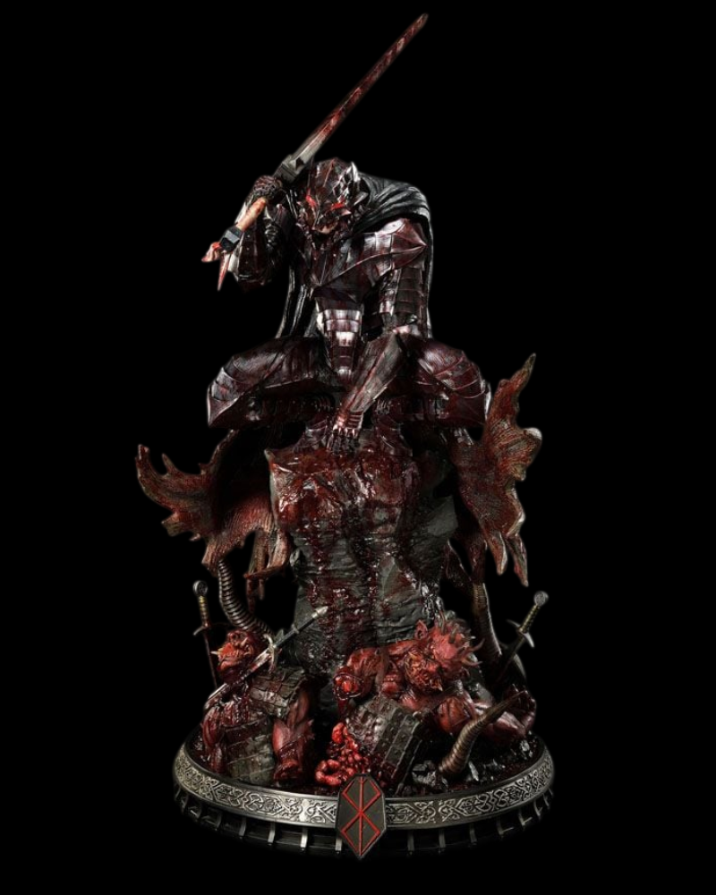
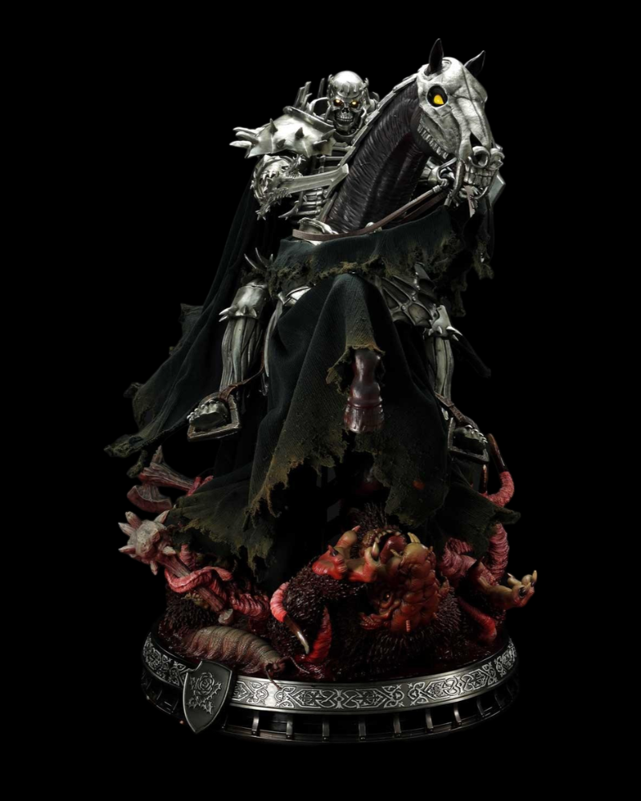
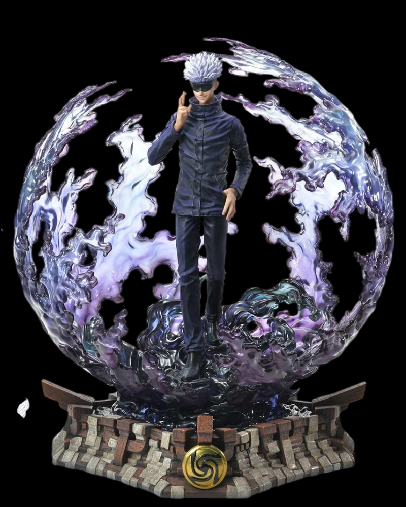
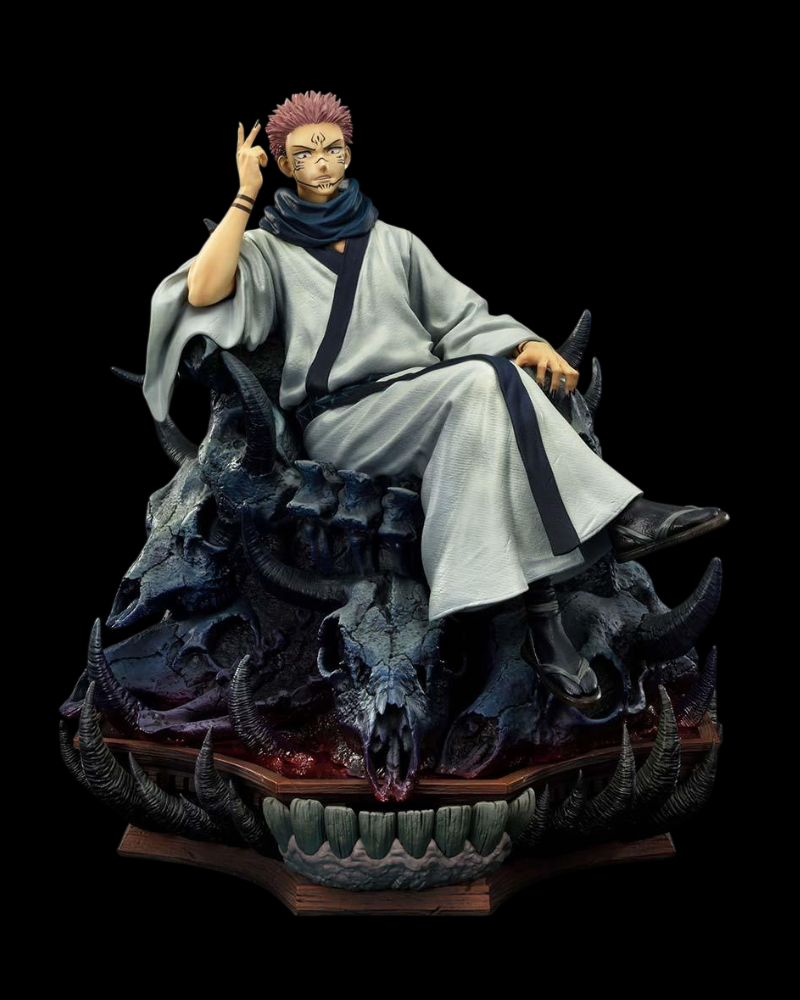

FIG. 001
ตัวอย่าง

NARUTO SHIPPUDEN
Naruto Uzumaki
เจตจำนงแห่งไฟ / ฟิกเกอร์ตัวเอก
ลำดับ 001
ดูรายละเอียด ↗
สำรวจคอลเลกชันฟิกเกอร์จาก 4 จักรวาลอนิเมะ ตั้งแต่นินจาผู้มีความฝัน นักล่าผู้เปี่ยมด้วยพลัง นักรบแห่งโลกอันมืดมน ไปจนถึงจอมไสยเวท ค้นพบเรื่องราวและเอกลักษณ์ของตัวละครแต่ละตัว

เจตจำนงแห่งไฟ / ฟิกเกอร์ตัวเอก

เนตรแห่งอุจิวะ / ฟิกเกอร์ตัวละคร

พลังสายฟ้า / ฟิกเกอร์ตัวละคร

เส้นทางของนักล่า / ฟิกเกอร์ตัวเอก

นักดาบดำ / ดาร์กแฟนตาซี

อัศวินกะโหลก / รูปปั้นสะสม

พลังไสยเวท / ฟิกเกอร์ตัวละคร

ราชาแห่งคำสาป / ฟิกเกอร์ตัวละคร
ยังไม่มีฟิกเกอร์ในหมวดหมู่นี้